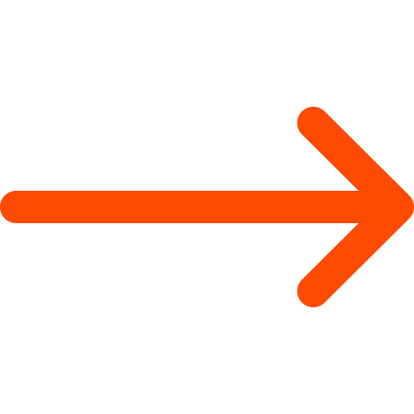

Lucide · stroke 1.5 · in
currentColor
· fallback substitution
Site has no in-house icon font. Lucide @ 1.5 stroke is the working substitution — flagged.
Site-native arrow asset (used on "Ver mais" links)

Replace with the SVG version if available; this is a raster export from the marketing site.